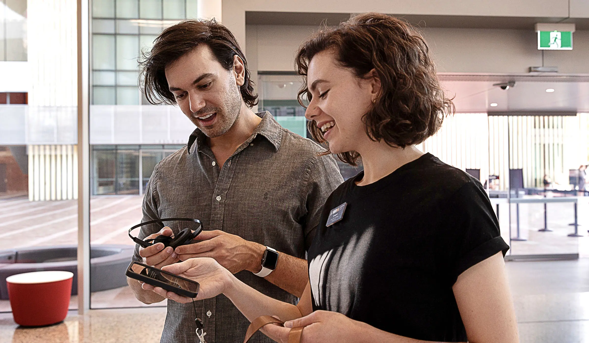
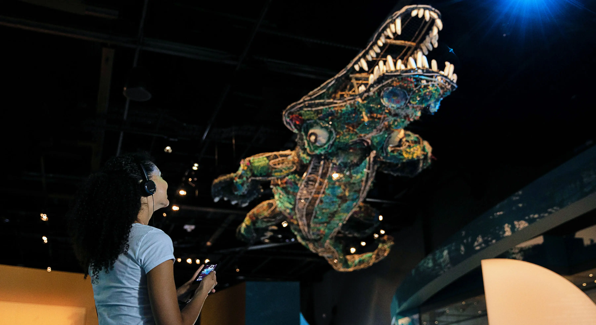
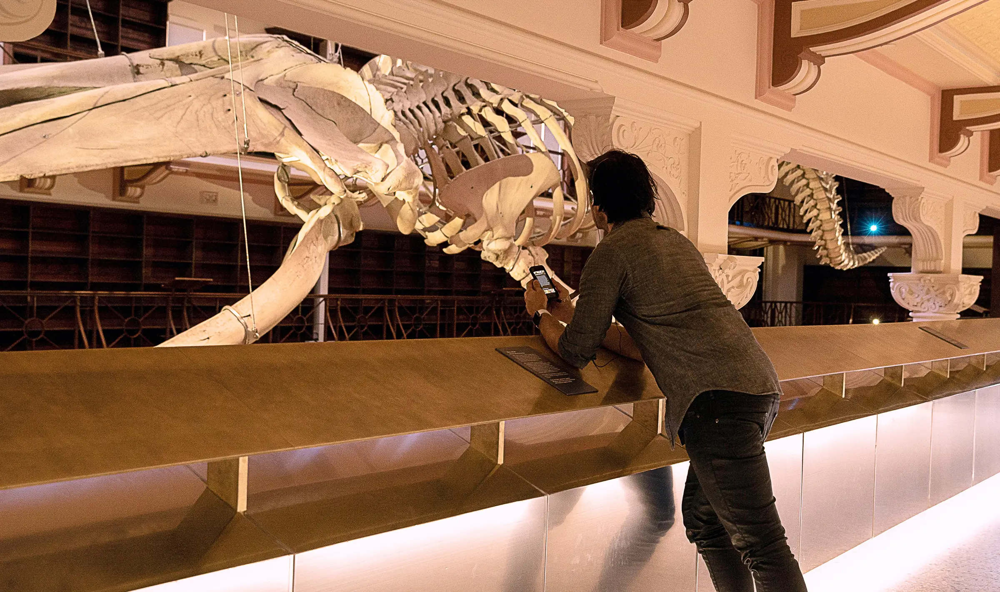
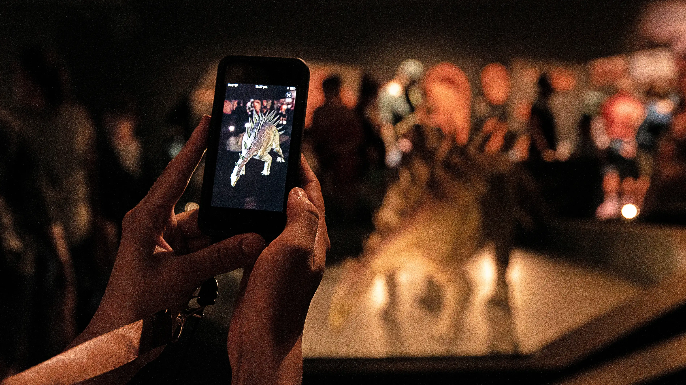

Western Australian Museum
Perth, Australia
The WA Museum Boola Bardip brings together Western Australia's cultural and scientific collections across eight permanent galleries. While at Art Processors, I worked on the design of a site-wide digital platform that supported storytelling and exploration across the museum.
The project focused on three connected components: a mobile audio guide, a system of digital object labels, and an augmented-reality experience linked to key displays in the galleries.

The audio guide offered visitors multiple ways of navigating the museum. Rather than a single prescribed tour, visitors could follow curated paths or explore freely, hearing stories from curators, researchers, and community voices as they moved through the building.

Alongside this, we developed digital object labels for selected displays across the museum. These labels presented deeper context for around 1,500 objects, allowing visitors to move between the physical display and additional stories without filling the galleries with large amounts of printed text.


The third component was an augmented reality experience that brought a number of prehistoric skeletons and fossils to life at full scale. Visitors could view reconstructions of extinct species directly within the gallery, extending the encounter with the physical specimens on display.
Together these elements formed a cohesive digital layer across the museum—helping visitors navigate a vast collection, encounter multiple perspectives, and move between objects, stories, and place.